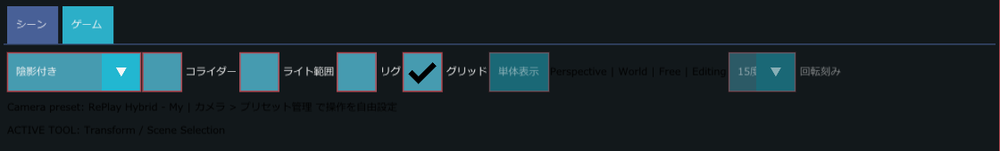

シーンビューとカメラ操作
画面中央の、シーンを 3D で表示する領域です。ここでシーンを見回し、オブジェクトを選んで動かします。このページでは、上部の表示設定、選択のしかた、カメラの動かし方、右クリックメニューを説明します。
こんなときに使う
- シーンを見回して、置いた物の位置や見た目を確かめたいとき
- 物をクリックして選び、ギズモで動かしたいとき
- たくさんの物がある中で、1 つだけをじっくり見たいとき（単体表示）
- 当たり判定の形やライトの届く範囲を、線で確かめたいとき（コライダー、ライト範囲）
- ゲームのカメラから見た画面を確かめたいとき（ゲームタブ）
シーンタブとゲームタブ
いちばん上に シーン と ゲーム の 2 つのタブがあります。
- シーン：編集用のカメラでシーンを表示します。オブジェクトの選択や移動はこのタブで行います。
- ゲーム：ゲーム内のカメラから見た画面を表示します。タブの下に「Runtime Camera | Free Aspect」と表示され、実行していないときは右に「PlayでRuntime Sceneをプレビュー」と黄色で表示されます。
シーンタブの上部

タブの下の 1 行目に、左から次の順で並びます。
| 順 | 表示 | 説明 |
|---|---|---|
| 1 | 描画モードの選択欄（既定は「陰影付き」） | シーンの描き方を選びます。陰影付き、陰影なし、ワイヤーフレーム、陰影付きワイヤーフレーム、衝突 の 5 つがあります。ただしこの版では、選んだモードを描画が使っていないため、どれを選んでも見た目は変わりません。当たり判定の形を見たいときは、右の コライダー を使います。 |
| 2 | □ コライダー | チェックを付けると、当たり判定（コライダー）の形を線で表示します。コライダーを持つ GameObject があるときに意味があります。 |
| 3 | □ ライト範囲 | チェックを付けると、ライトの届く範囲を表示します。ライトのコンポーネントを持つ GameObject があるときに意味があります。 |
| 4 | □ リグ | チェックを付けると、骨（リグ）を表示します。表示中は、骨をクリックして選べます。 |
| 5 | □ グリッド | チェックを付けると、地面の目安になる格子を表示します。 |
| 6 | 単体表示 | 選択中の GameObject とその子だけを表示します。次の節で説明します。 |
| 7 | Perspective | World | Free | Editing | 今の状態を表す文字です。次の表を見てください。 |
| 8 | 回転刻み（既定は 15度） | ツールバーの Snap にチェックがあるときの、回転の刻みを選びます。1度、5度、10度、15度、30度、45度、90度から選べます。Snap にチェックが無いときは薄く表示され、選べません。 |
状態の文字は、次の 4 つを「|」で区切って並べたものです。
| 位置 | 表示 | 意味 |
|---|---|---|
| 1 つ目 | Perspective | 遠近のある表示です（常にこの表示）。 |
| 2 つ目 | World / Local | ツールバーの World・Local の状態です。リグを表示して骨を選んでいるときは World(骨) / Local(骨) になります。 |
| 3 つ目 | Snap / Free | ツールバーの Snap にチェックがあれば Snap、無ければ Free です。 |
| 4 つ目 | Editing / Playing / Paused | 編集中、実行中、一時停止中のどれかです。 |
その下に次の 2 行が薄い文字で表示されます。
- Camera preset: （プリセット名） | カメラ > プリセット管理 で操作を自由設定：今使っているカメラ操作プリセットの名前です。
- ACTIVE TOOL: Transform / Scene Selection：今の道具です。地形（Landscape）を編集しているときは「ACTIVE TOOL: Landscape / Sculpt」などに変わり、「(Escで終了 / Ctrl・Alt+左クリックで通常選択)」が付きます。
単体表示
たくさんの物が置かれたシーンで、1 つのオブジェクトだけをじっくり見たいときに使います。
- 表示したい GameObject を選択します。何も選んでいないと、単体表示 ボタンは薄く表示されます。
- 単体表示 を押します。選択した GameObject とその子だけが表示され、ボタンの色が押したときの色のままになります。
- 1 行目の下に「単体表示中: （名前）」と水色で表示されます。
- 元に戻すには、もう一度 単体表示 を押すか、シーンビューを操作中に Esc を押します。カメラも単体表示を始める前の位置に戻ります。
単体表示中に別の GameObject を選ぶと、表示の対象がその GameObject に移り、カメラがそこへ寄ります。ギズモをつかんでいる間の Esc は、ギズモの操作の取り消しが優先されます。
オブジェクトの選択
| 操作 | 結果 |
|---|---|
| オブジェクトをクリック | そのオブジェクトだけを選択します。 |
| Shift または Ctrl を押しながらクリック | 今の選択に追加します。 |
| 何もない場所をクリック | 選択を解除し、インスペクターにワールドの設定が出ます。 |
| 左ボタンを押したまま 4 ピクセルより長くドラッグ | 水色の四角が表示され、離したときに、画面上でその四角に重なったオブジェクトをまとめて選択します。Shift か Ctrl を押していれば今の選択に追加します。何も重ならなかったときは選択が解除され、「選択を解除しました」と表示されます。 |
四角で選べるのは、有効になっている GameObject だけです。リグ にチェックがあるときは、骨のクリックが GameObject の選択より先に判定されます。
カメラの動かし方
シーンビューのカメラの操作は、カメラ操作プリセット で決まります。既定は RePlay Hybrid です。次の表は RePlay Hybrid の操作です。
| 操作 | 動き |
|---|---|
| 右ボタンを押したままマウスを動かす | その場で見回します。 |
| W S | 前・後ろへ進みます。 |
| A D | 左・右へ進みます。 |
| E Q | 上・下へ進みます。カメラの向きに関係なく、ワールドの真上・真下に動きます。 |
| 移動中に Shift | 4 倍の速さになります。 |
| 移動中に Ctrl | 0.25 倍の速さになります。 |
| Alt を押しながら左ボタンでドラッグ | 注目点のまわりを回り込みます（オービット）。 |
| 中ボタン（ホイール）を押したままドラッグ | 画面と平行に動きます（パン）。 |
| Alt を押しながら右ボタンでドラッグ | 前後に寄ったり離れたりします（ドリー）。 |
| ホイールを回す | ズームします。 |
| 右ボタンを押して移動キーを押しながらホイールを回す | ズームではなく移動の速さが変わります。1 目盛りで 1.15 倍（逆に回すと 1/1.15）です。 |
| ← → ↑ ↓ | 左右・上下へ向きを変えます。1 秒に 90 度の速さです。 |
| Ctrl+← / Ctrl+→ | カメラを左右に傾けます（ロール）。 |
| F | 選択中のオブジェクトにカメラを寄せます。 |
| テンキー 1 / Ctrl+テンキー 1 | 正面から見る向き / 背面から見る向きにそろえます。 |
| テンキー 3 / Ctrl+テンキー 3 | 右から見る向き / 左から見る向きにそろえます。 |
| テンキー 7 / Ctrl+テンキー 7 | 上から見る向き / 下から見る向きにそろえます。 |
| ドラッグ中に Esc | 見回し・オービット・パン・ドリーを途中で止めます。 |
RePlay Hybrid では、右ボタンを押していなくても W A S D E Q で移動できます。テンキーで向きをそろえても、遠近のある表示のままです。
カメラが動かないとき
次のどれかに当てはまるとき、カメラの操作は始まりません。
- エディターのウィンドウが前面に出ていない
- マウスがシーンビューの上に無く、シーンビューも選ばれていない
- 文字の入力欄に入力している
- メニューや確認画面などが開いている
- ギズモをドラッグしている
F だけは、階層パネルで選んだ直後などシーンビューが選ばれていないときでも効きます。ただし、文字入力中、メニューなどが開いているとき、ギズモのドラッグ中は効きません。
ワールドを選択したときのインスペクターにある カメラ操作の関門 を開くと、今どの条件で止まっているかを確認できます。
ほかの組み込みプリセット
カメラ > 操作プリセット から、ほかのツールに似せた組み込みプリセットを選べます。RePlay Hybrid との主な違いは次のとおりです。
| プリセット | 見回す | オービット | パン | ドリー | 右ボタンなしで移動キー | 上下移動（E / Q） |
|---|---|---|---|---|---|---|
| RePlay Hybrid | 右ドラッグ | Alt+左ドラッグ | 中ドラッグ | Alt+右ドラッグ | できる | あり |
| Unity Style | 右ドラッグ | Alt+左ドラッグ | 中ドラッグ | Alt+右ドラッグ | できない | あり |
| Unreal Style | 右ドラッグ | Alt+左ドラッグ | 中ドラッグ | Alt+右ドラッグ | できない | あり |
| Maya Style | なし | Alt+左ドラッグ | Alt+中ドラッグ | Alt+右ドラッグ | できない | なし |
| Blender Style | なし | 中ドラッグ | Shift+中ドラッグ | Ctrl+中ドラッグ | できない | なし |
Maya Style と Blender Style では、右ボタンを押しながらホイールで速さを変える操作も無効です。どのプリセットでも、F、テンキーでの向きそろえ、矢印キーでの向き変更は同じです。
右クリックメニュー
シーンタブで、実行していないときに、右ボタンを短くクリックするとメニューが開きます。右ボタンを押したまま 6 ピクセルより動かした場合は見回しの操作になり、メニューは開きません。
| 項目 | 押せる条件 | 説明 |
|---|---|---|
| Play From Here | クリックした位置のワールド座標が求められるとき | クリックした場所から操作対象を始めて、ゲームを実行します。 |
| Play From Here + Camera Direction | 同上 | クリックした場所から、今のカメラの向きで始めて実行します。 |
| Play From Camera | いつでも | 今のカメラの位置と向きから始めて実行します。 |
| Play From Checkpoint ▶ | シーンに Checkpoint コンポーネントがあるとき、または「テンプレート部品も表示する」がオンのとき | チェックポイントを選んで、そこから実行します。チェックポイントが無ければ「Checkpoint がありません」と表示されます。 |
| Add Scene Memo Here | クリックした位置のワールド座標が求められるとき | クリックした場所にシーンメモを置きます。 |
| Open Scene Notes | いつでも | シーンメモのウィンドウを開きます。 |
アセットのドラッグ＆ドロップ
プロジェクトパネルのアセットを、シーンタブの上にドラッグして離すと、そのアセットをシーンに置きます。置く位置は、マウスの下にある場所です。
使い方の例
置いた物に寄って確かめる
- 階層パネルで、確かめたい GameObject を選びます。
- F を押すと、カメラがその物に寄ります。
- 右ボタンを押したままマウスを動かして見回し、W A S D で前後左右に動きます。Alt を押しながら左ドラッグで、物のまわりを回り込めます。
真上から並び方を確かめる
- シーンビューの上にマウスを置き、テンキーの 7 を押します。真上から見る向きにそろいます。
- 物の間隔や並びを確かめたら、右ボタンで見回すと、ふつうの見え方に戻ります。
1 つだけを表示して調整する
- 調整したい GameObject を選び、単体表示 を押します。その物と子だけが表示されます。
- 見た目や当たり判定を調整します。
- Esc（または もう一度 単体表示）で元に戻します。
いくつかの物をまとめて選ぶ
- 何もない場所から左ボタンでドラッグし、水色の四角で選びたい物を囲みます。
- 離すと、四角に入った物がまとめて選ばれます。足したいときは Shift を押しながらクリックします。